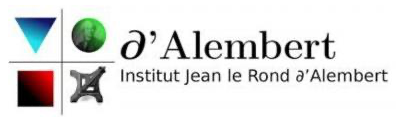

Research Intern — Bioconvection of Microalgae
May 2026 – July 2026Jean le Rond d'Alembert Institute, Sorbonne Université · Paris
- Numerical modelling of Rayleigh–Bénard bioconvection instabilities driven by the coupling of gravity and gyrotaxis, extended to phototaxis under light illumination.
- Analysed plume dynamics (spacing, velocities, vorticity) and geometric confinement effects; assessed a concentration-dependent viscosity model.
- Supervised by José María Fullana and Arnaud Antkowiak, based on Anaëlle Givaudan's doctoral research.
BasiliskParaViewPythonBioconvection